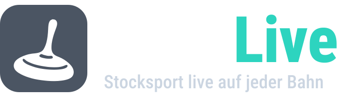
Das Wertungssystem fürs Eisstockschießen: Punkte per Drehknopf, Fernbedienung oder Handy eingeben und sofort live auf jedem Fernseher in der Halle sehen. Mit Turnieren, Live-Tabelle und Drucken.
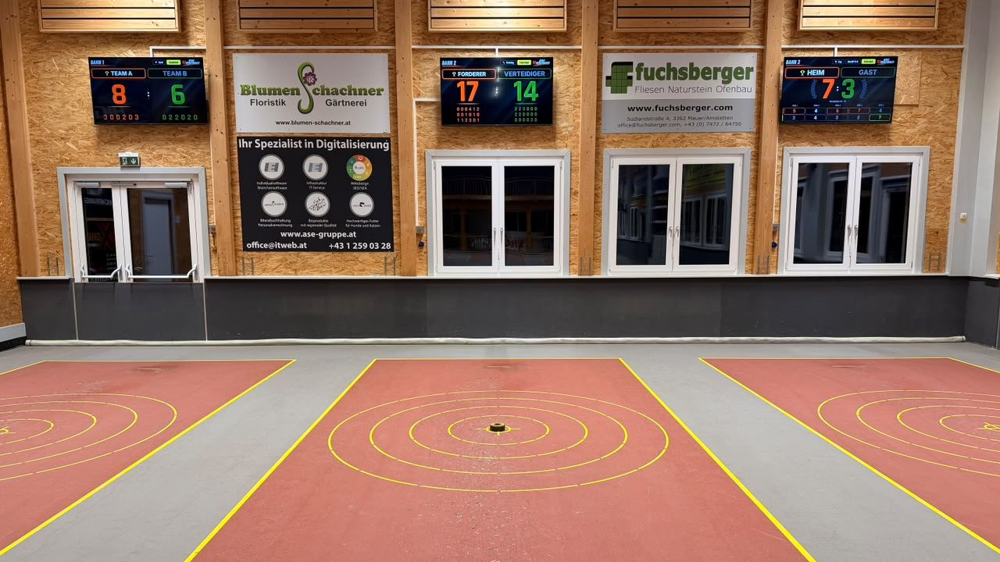
Eisstockschießen live auf jeder Bahn
MoarLive ist das Wertungssystem für den Stocksport: Jede Kehre wird mit einem Dreh oder Tastendruck eingegeben und erscheint sofort groß auf dem Fernseher an der Bahn, in der ganzen Halle und am Handy. Training, Spiel, Cup und ganze Turniere, alles in einem Programm.
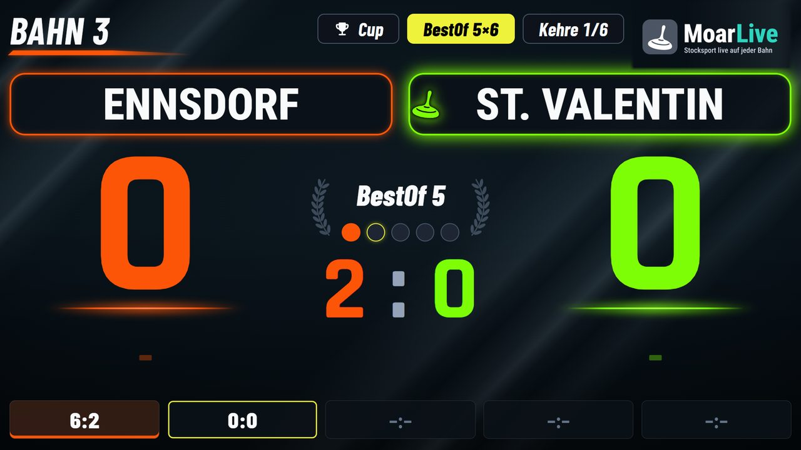
Was ist MoarLive?
Beim Eisstockschießen wird nach jeder Kehre gezählt. Mit MoarLive muss niemand mehr auf Zettel schreiben oder Tafeln umstecken: Der Spielstand wird eingegeben und alle sehen ihn sofort, die Schützen an der Bahn, die Zuschauer in der Halle und die Daheimgebliebenen am Handy.
Das Programm läuft auf einem Server, entweder in der Microsoft Azure Cloud oder auf einem einzigen Rechner im Vereinsheim. Die Anzeigen sind einfache Fernseher oder Bildschirme. Bedient wird alles im Browser, ohne Installation am PC.
- Spielstand, Kehren und Ergebnis groß auf jedem Fernseher
- Eingabe per Drehknopf, TV-Fernbedienung, Handy oder PC
- Turniere mit Spielplan, Live-Tabelle und fertigen Drucken
- Werbung und Sponsorenlogos zwischen den Spielen
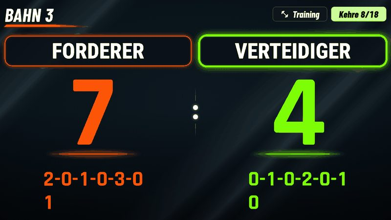
Ihre Vorteile
Gemacht von Stockschützen für Stockschützen und im Vereinsalltag erprobt.
Jeder Fernseher wird zur Anzeigetafel
Ein Fire TV Stick am Fernseher oder ein Fernseher mit Fire TV genügt. Die Anzeige startet beim Einschalten von selbst.
Eingabe in Sekunden
Drehen, drücken, fertig. Fehler lassen sich mit einem Klick zurücknehmen.
Turniere ohne Rechenbüro-Stress
Spielplan, Bahnverteilung, Tabelle nach IER und Drucke erstellt MoarLive automatisch.
Mehrere Vereine, ein System
Jeder Verein hat seinen eigenen Bereich mit eigenen Bahnen, Geräten, Benutzern und eigenem Design.
Werbung für Sponsoren
Sponsorenlogos und Werbebilder laufen auf freien Bahnen und im Sponsorenband der Hallenanzeige.
TV-Design individuell anpassbar
Farben, Schriften, Logo und Hintergrund in Ihrem Vereinsstil. Updates kommen dabei automatisch.
Anzeigen für Bahn, Halle und Handy
Gut lesbar aus großer Entfernung, in den Vereinsfarben und mit eigenem Logo.
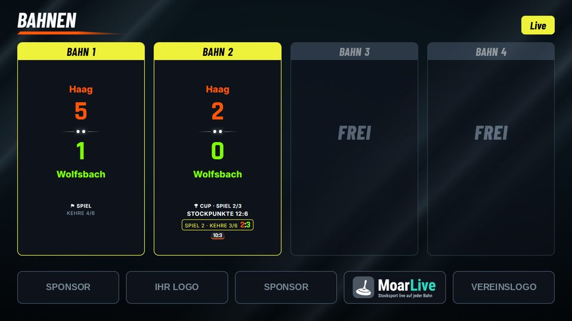
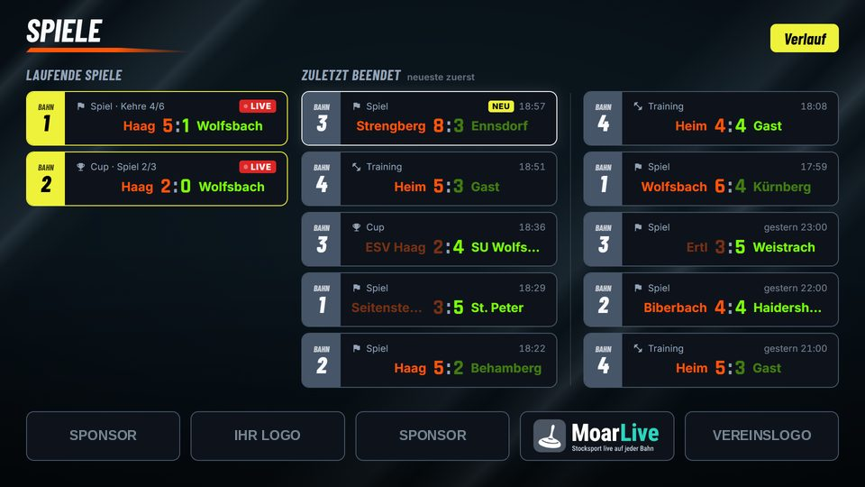
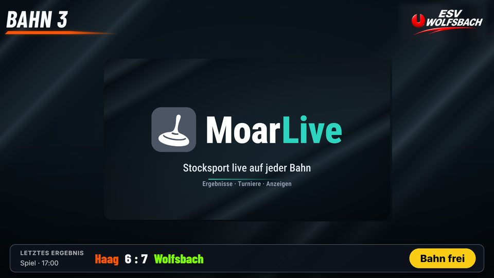
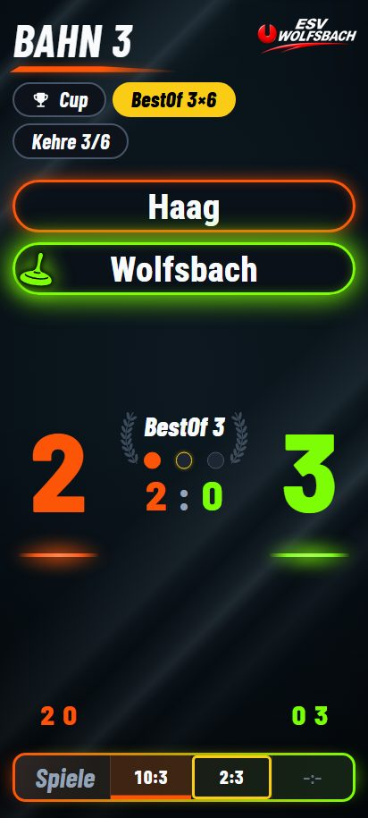
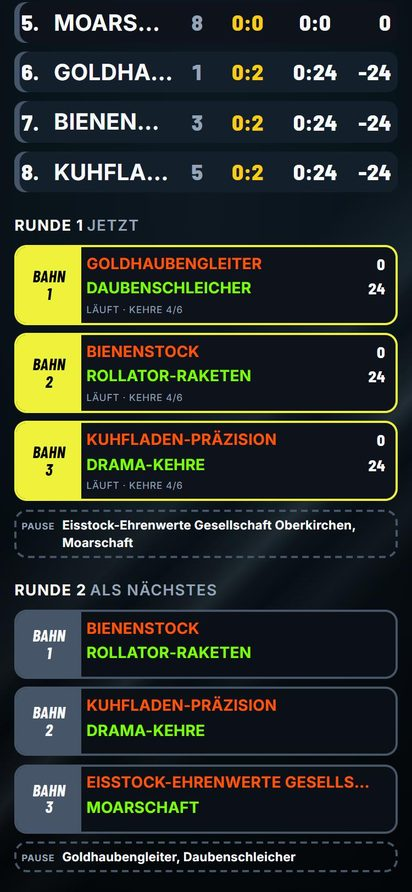
TV-Design individuell anpassbar
Die Anzeigen sehen aus wie Ihr Verein. Jeder Verein gestaltet sein eigenes TV-Design, ganz ohne Programmierkenntnisse.
- Eigene Farben für Teams, Text und Akzente
- Eigene Schriften und Schriftgrößen
- Vereinslogo und eigener Hintergrund
- Fertige Vorlagen zum Starten, z. B. „Klar und groß“ oder „Sportlich“
- Live-Vorschau: Sie sehen jede Änderung sofort, die Fernseher übernehmen sie nach dem Speichern
- Design als Datei exportieren und in einen anderen Verein übernehmen
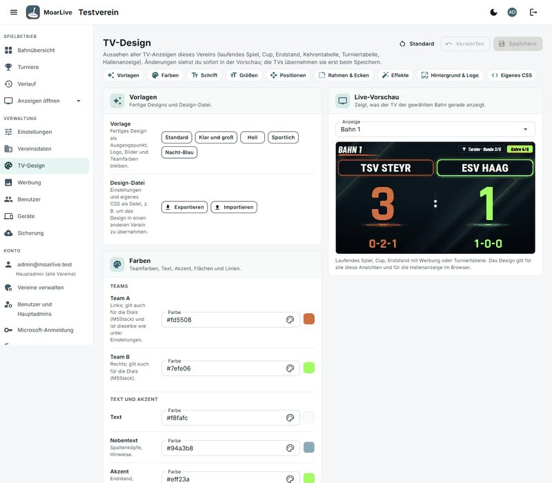
Eingabe: so wie es am besten passt
Alle Eingaben landen sofort auf allen Anzeigen. Wer was eingeben darf, legt der Verein fest.
Der MoarLive-Drehknopf
Drehen wählt Team und Punkte, Drücken sendet. So einfach, dass es jeder an der Bahn sofort kann.
- Keine Leitung zur Anzeige nötig: Der Knopf funkt über WLAN.
- Läuft mit Akku oder USB-C-Netzteil
- Bahn wählen, Spiel starten (Training, Spiel, Cup), Kehren eintragen
- Großer, gut lesbarer Farbbildschirm
- Updates kommen automatisch über WLAN
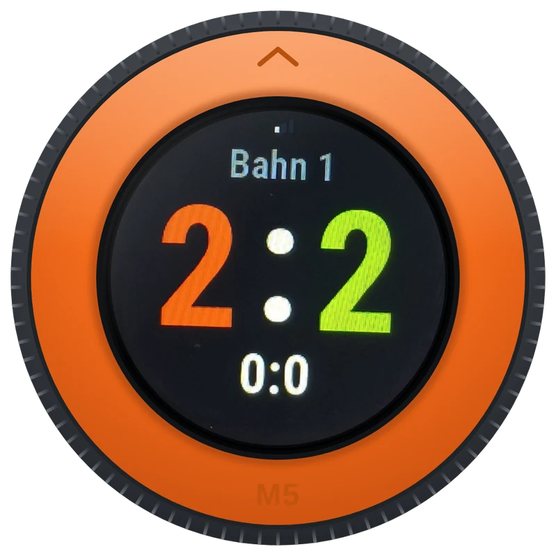
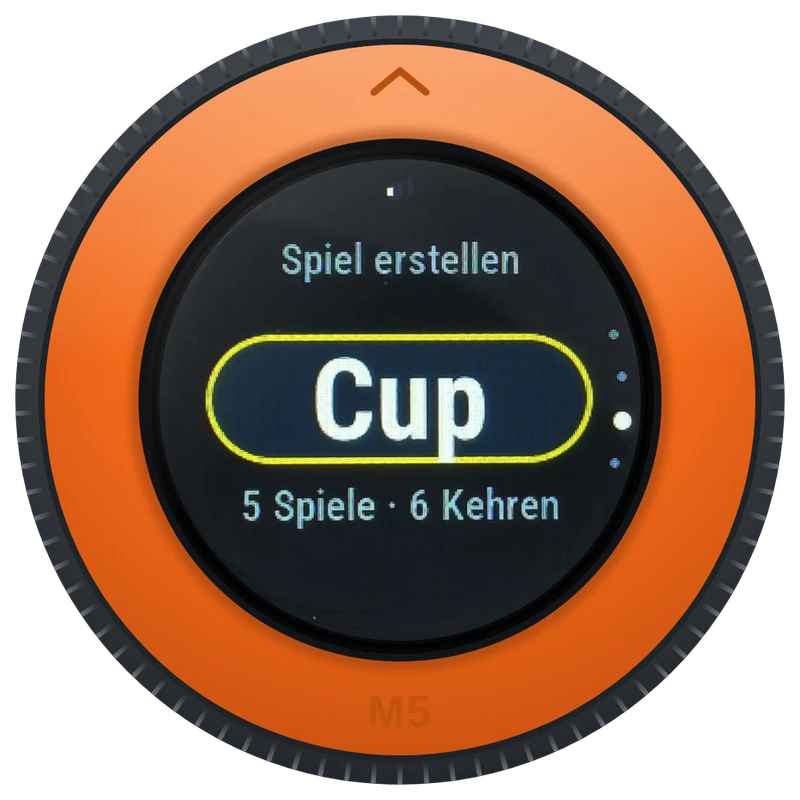
Spielart wählen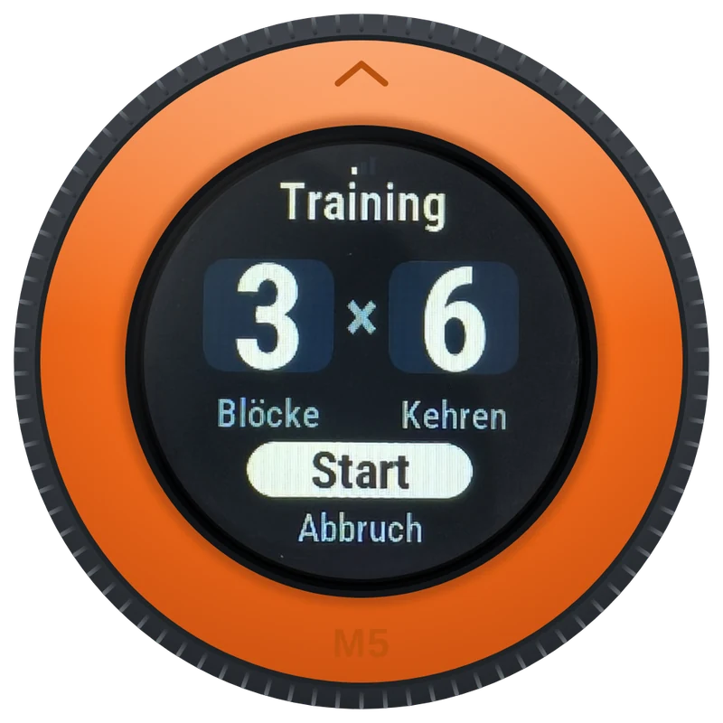
Training starten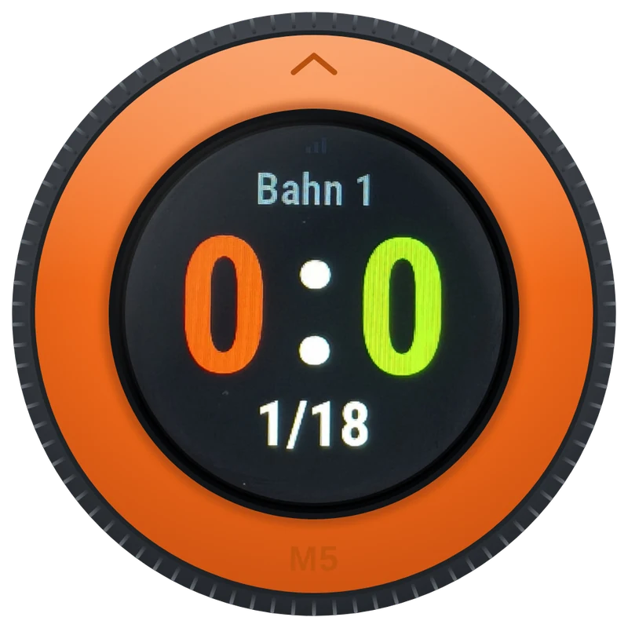
Punkte eintragen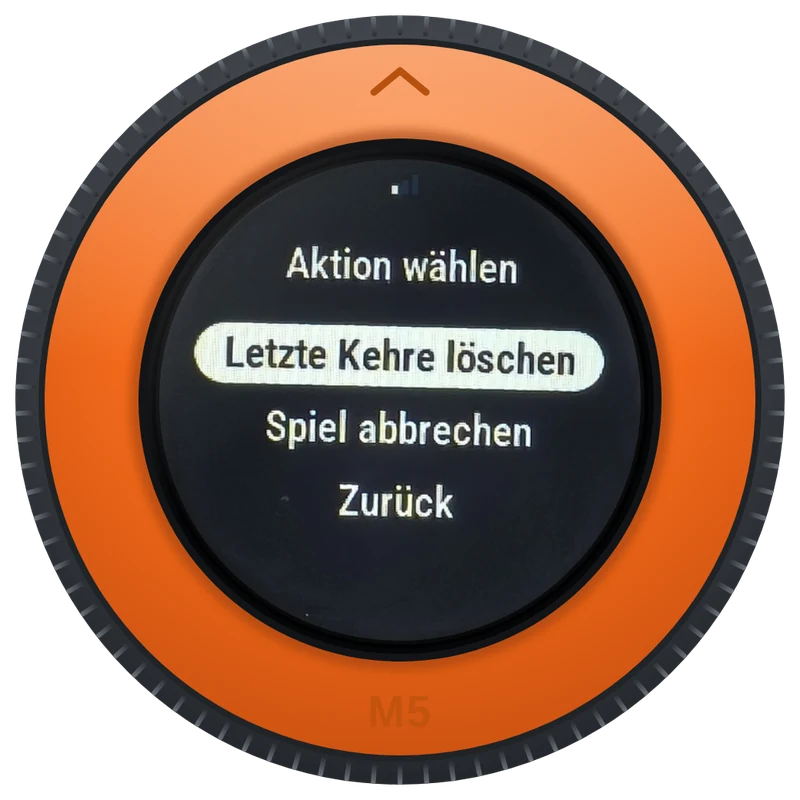
Bei Bedarf korrigierenOder ganz ohne Zusatzgerät
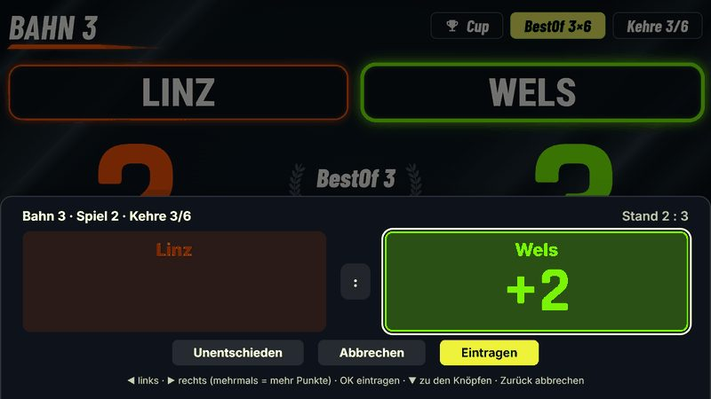
Fernbedienung am Fernseher
Mit der Fire-TV-Fernbedienung Punkte eintragen, Spiel starten, Teamnamen ändern. Ganz ohne zusätzliches Gerät.
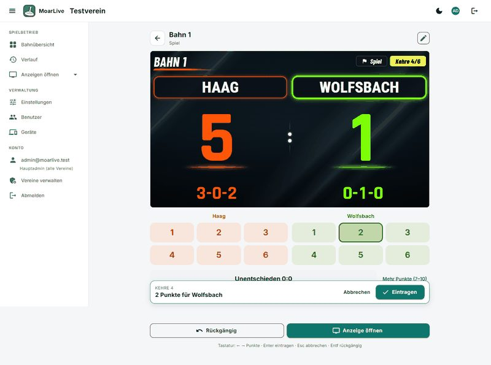
Handy, Tablet oder PC
Im Browser anmelden und Punkte antippen. Ideal für den Schreiber oder das Rechenbüro.
Turniermodus
Vom Spielplan bis zur Siegerliste: MoarLive nimmt dem Turnierleiter die Rechenarbeit ab.
- Mannschaften eintragen, Spielplan „Jeder gegen Jeden“ wird automatisch erstellt
- Gleichmäßige Verteilung auf die Bahnen, ausgeglichenes Anspiel
- Live-Tabelle in der Halle: wer spielt jetzt, wer als Nächstes, wer hat Pause
- Wertung nach IER: Punkte, Stockpunkte-Differenz, direkter Vergleich
- Drucke auf Knopfdruck: Ergebnisliste, Wertungs- und Laufkarten, Mannschaftsblatt, Zahlungsbestätigung
- Folgeturnier mit Aufsteigern und Turnier kopieren
Für einzelne Begegnungen gibt es außerdem die Spielarten Training, Spiel und Cup (mehrere Spiele mit Spielpunkten und Stockpunkten).
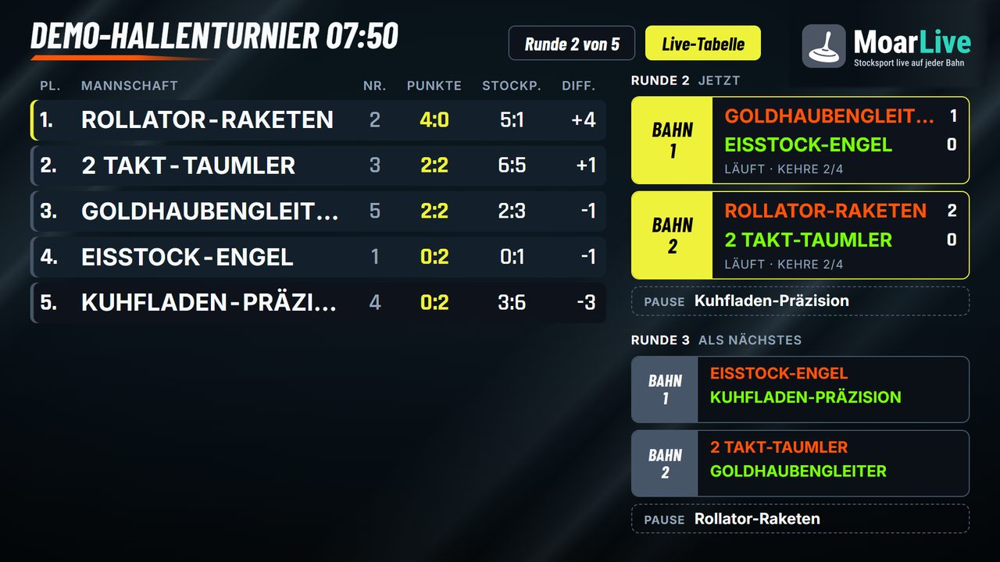
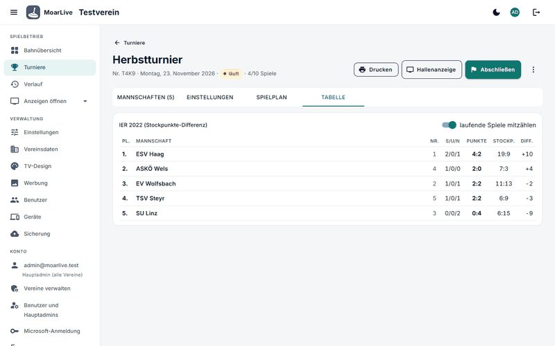
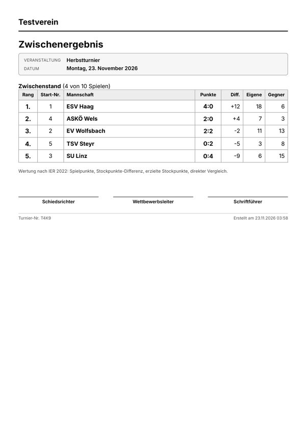
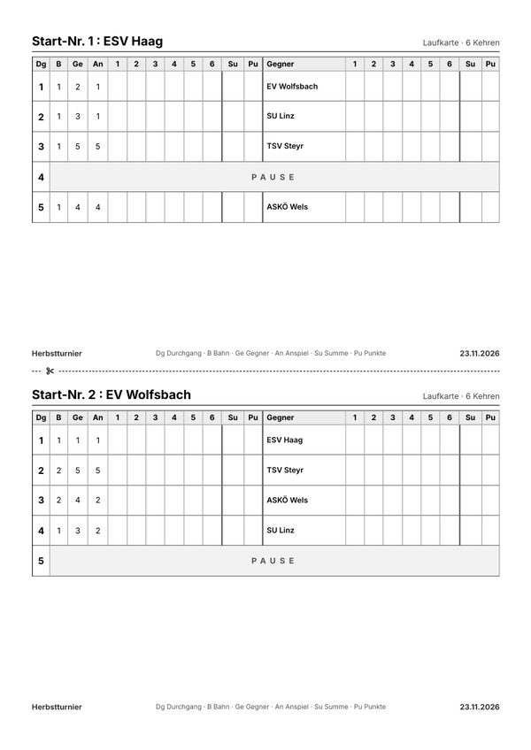
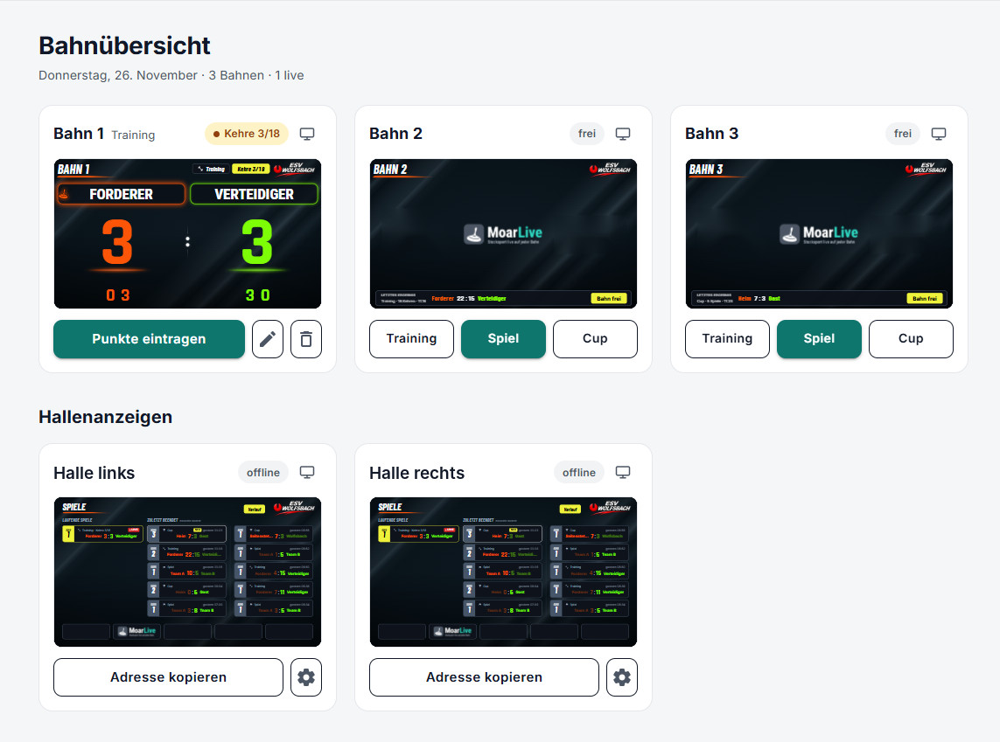
Möglichkeiten der Installation
Zwei Wege, gleiche Funktionen. Sie entscheiden, was zu Ihrer Halle passt.
📺 Für jede Anzeige nötig: ein Fernseher mit Fire TV oder ein Fire TV Stick am Fernseher. Mehr Technik braucht es an der Bahn nicht.
Kein Server pro Bahn! Beim gehosteten Server brauchen Sie gar keinen eigenen Rechner. Nur bei der lokalen Installation steht ein einziger Rechner im Vereinsheim, für alle Bahnen zusammen: ein vorhandener PC mit Windows oder Linux, ein Mini-PC oder ein Raspberry Pi.
Gehosteter Server
MoarLive läuft bei uns in der Microsoft Azure Cloud. Ihr Verein bekommt einen eigenen Bereich, Sie melden sich an und legen los.
- Kein eigener Rechner oder Server nötig
- Nichts zu installieren und zu warten
- Updates und Sicherung übernehmen wir
- Ergebnisse auch von daheim abrufbar
- Voraussetzung: WLAN mit Internet in der Halle
Lokaler Server
MoarLive läuft auf einem einzigen Rechner im Vereinsheim: vorhandener PC (Windows oder Linux), Mini-PC oder Raspberry Pi. Fernseher und Drehknöpfe verbinden sich über das Hallen-WLAN.
- Nur ein einziger Rechner für die ganze Halle
- Funktioniert auch ganz ohne Internet
- Alle Daten bleiben im Verein
- Aktualisiert sich nachts automatisch, sobald Internet da ist
- Wir helfen bei der Einrichtung
In vier Schritten zur Anzeige
Verein anlegen
Name, Bahnen, Logo und Farben eintragen.
Fernseher anschließen
App MoarLive TV am Fire TV starten.
Gerät freischalten
Der Fernseher zeigt einen Code, der Vereinsverwalter weist ihn einer Bahn zu.
Spielen
Spiel starten, Kehren eingeben, alle schauen zu.
So hängt alles zusammen
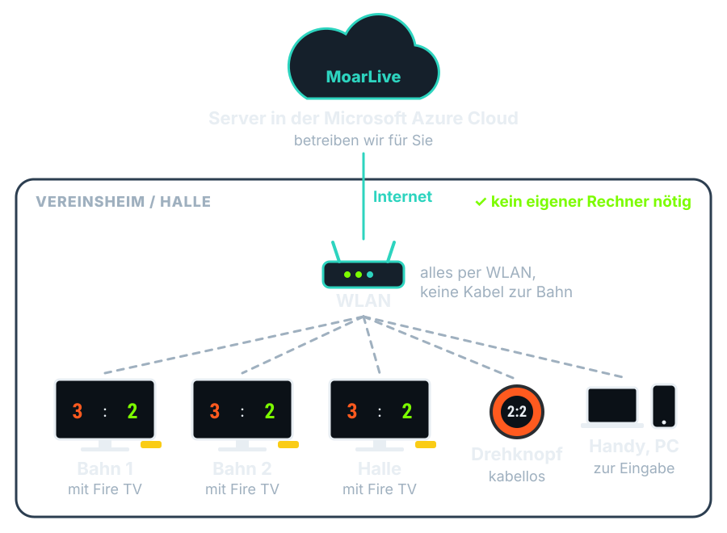
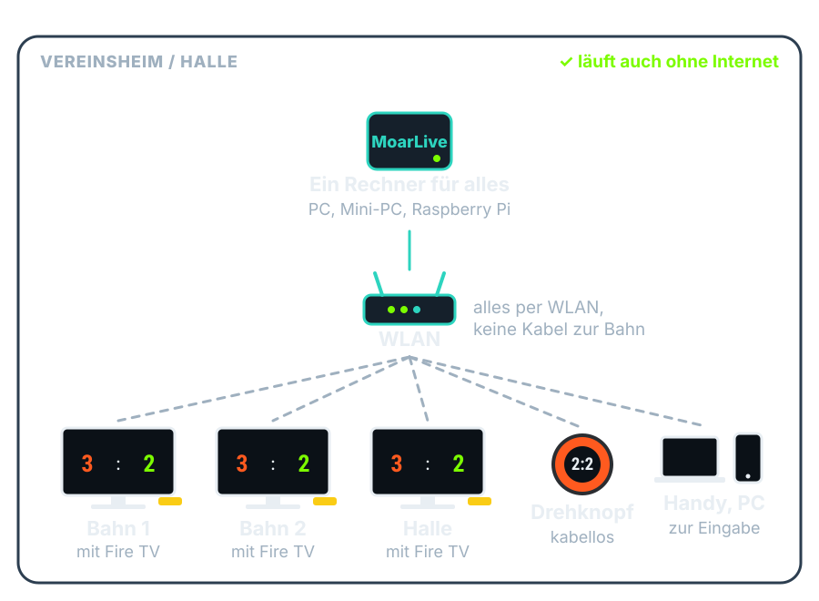
Preise: fair und durchschaubar
Sie zahlen nur für die Bahnen, die Sie wirklich haben. Alle Funktionen sind immer dabei.
★ Einführungspreis bis 31.03.2027Wir betreiben den Server
Der Server läuft bei Microsoft in der Azure Cloud. Keine Technik im Verein nötig, Anzeigen einfach per WLAN verbinden.
Der Server steht in Ihrer Halle
Läuft auch ohne Internet. Einrichtung aus der Ferne auf Wunsch einmalig 49 €.
Pakete für jede Halle (Einführungspreise bis 31.03.2027)
Start
Verein
Halle
Groß
📺 Pro Anzeige brauchen Sie: einen Fernseher mit Fire TV oder einen Fire TV Stick am Fernseher (ab ca. 40 €, nicht im Preis enthalten).
Mehr als 10 Bahnen? Gerne auf Anfrage. Fernseher, Fire TV und Drehknopf sind nicht im Preis enthalten. Alle Preise in Euro, zzgl. USt.
Für jeden die richtige Rolle
- Schreiber tragen Punkte ein und starten Spiele.
- Vereinsverwalter kümmern sich um Bahnen, Geräte, Turniere, Werbung und Benutzer des eigenen Vereins.
- Hauptadmins verwalten den Server mit allen Vereinen.
Neue Fernseher und Drehknöpfe zeigen nur einen Freischalt-Code. Erst wenn der Verein sie freigibt, zeigen sie etwas an. So kann niemand Fremder mitspielen.
Sicherung und Wiederherstellung der Vereinsdaten sind eingebaut.
Im Einsatz beim ESV Wolfsbach
Alle Bahnen, alle Anzeigen, Training, Meisterschaft und Turniere: Beim ESV Wolfsbach läuft alles mit MoarLive.
MoarLive ist im Verein entstanden und wird dort im laufenden Spielbetrieb genutzt. Jede Verbesserung kommt aus dem echten Spielbetrieb: vom Drehknopf an der Bahn bis zur Siegerliste am Turniertag.
Demo: selbst ausprobieren
Im Demo-Verein laufen rund um die Uhr simulierte Spiele und Turniere. Schicken Sie einfach eine kurze Anfrage: Sie bekommen dann einen Zugang zu Testzwecken freigeschaltet. Öffnen Sie Hallenanzeige oder Bahn am Fernseher oder Beamer und probieren Sie die Eingabe selbst aus.
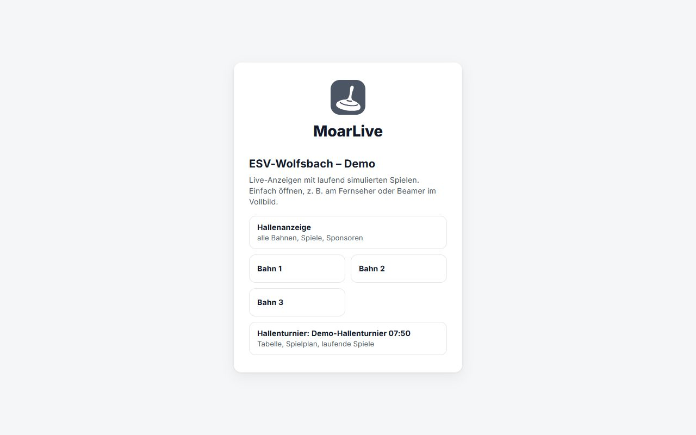
Häufige Fragen
Was brauche ich, um MoarLive zu nutzen?
Pro Anzeige einen Fernseher mit Fire TV, also einen Fire-TV-Fernseher oder einen Fire TV Stick am Fernseher. Dazu ein Handy, Tablet, die Fernbedienung oder einen MoarLive-Drehknopf zur Eingabe. Für die gehostete Variante reicht WLAN mit Internet in der Halle.
Funktioniert MoarLive ohne Internet?
Ja. Mit dem lokalen Server auf einem Rechner im Vereinsheim läuft alles im eigenen Hallen-WLAN, auch ohne Internet.
Brauche ich einen eigenen Server oder einen Raspberry Pi?
Beim gehosteten Server nicht. Nur bei der lokalen Installation braucht es einen einzigen Rechner für die ganze Halle, nicht einen pro Bahn. MoarLive läuft in Docker, also auf einem vorhandenen PC mit Windows oder Linux, einem Mini-PC oder einem Raspberry Pi.
Welche Fire-TV-Geräte gehen?
Die App MoarLive TV läuft auf Fire-TV-Geräten mit Fire OS: Fire TV Stick (z. B. 4K) oder Fernseher mit eingebautem Fire TV. Pro Anzeige wird ein Gerät gebraucht.
Können mehrere Vereine MoarLive gemeinsam nutzen?
Ja. Ein Server verwaltet beliebig viele Vereine. Jeder Verein sieht nur seine eigenen Bahnen, Spiele, Turniere und Geräte.
Welche Spielarten gibt es?
Training (Punkte fortlaufend über alle Kehren), Spiel und Cup (mehrere Spiele mit Spielpunkten und Stockpunkten) sowie Turniere „Jeder gegen Jeden“ mit Wertung nach IER.
Wie bekomme ich MoarLive für meinen Verein?
Schreiben Sie uns über „Anfrage stellen“. Wir zeigen Ihnen MoarLive gerne und besprechen, welche Installation passt.